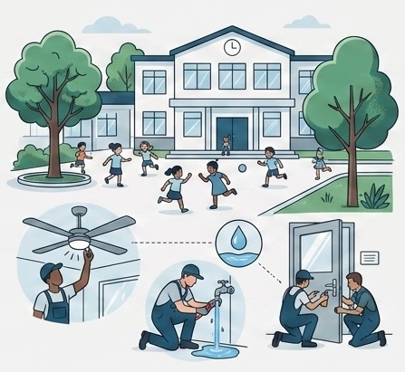

Une panne dans votre école ? Dites-le en deux minutes.
Un ventilateur qui ne tourne plus, une fuite, une porte qui ferme mal. Vous recevez un lien par courriel, et le formulaire arrive déjà rempli au nom de votre école.

Trois étapes, et vous n'y revenez plus
Le Pôle Technique s'occupe du reste, et vous tient informé à chaque passage.
1
Vous décrivez
Le domaine, l'endroit, ce que ça empêche de faire. Une photo si vous en avez une.
2
Nous intervenons
La demande part au bon agent, ou au bon service. Vous recevez son numéro.
3
Vous confirmez
Rien ne se referme sans votre accord. Si ce n'est pas réglé, vous le dites.